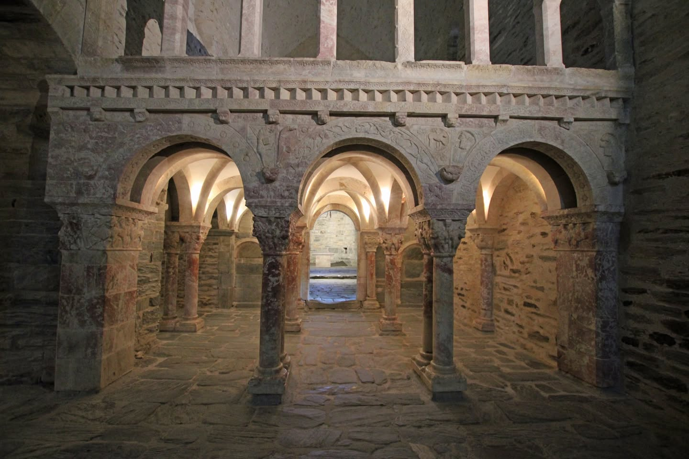

Vitraux
RomansSerrabone & Saint-Michel-de-Cuxa


⟹ Art roman des vallées catalanes ⟸
Au pied du Canigou, Saint-Michel de Cuxa et Sainte-Marie de Serrabona racontent deux histoires monastiques différentes mais complémentaires. La première est une grande abbaye bénédictine d'origine carolingienne ; la seconde, une modeste église de montagne devenue prieuré de chanoines augustins. Leur architecture permet de suivre plusieurs siècles de création, du préroman du Xe siècle à l'apogée de la sculpture romane roussillonnaise au XIIe siècle.
L'histoire de Cuxa commence vers 840 avec la fondation du monastère de Saint-André d'Eixalada, établi dans une gorge de la Têt. En 878, une crue catastrophique détruit l'établissement. Les moines survivants se replient à Cuxa, près d'une église préexistante, et y reconstruisent leur communauté. Sous la protection des comtes de Cerdagne, le monastère acquiert rapidement terres, privilèges et influence.
Au Xe siècle, Cuxa devient un centre religieux de premier plan. Le comte Sunifred II de Cerdagne favorise la construction d'une grande abbatiale ; l'abbé Garin, lié au courant réformateur monastique, en consacre l'église Saint-Michel le 28 septembre 974. Cette vaste église, encore largement conservée, constitue un témoignage exceptionnel de l'architecture préromane. Le rayonnement de l'abbaye dépasse alors le Conflent et s'inscrit dans les grands réseaux spirituels de l'Occident autour de l'an mil.
Une nouvelle phase s'ouvre avec l'abbé Oliba, à la tête de Cuxa de 1008 à 1046, également abbé de Ripoll et évêque de Vic. Grande figure de la Catalogne médiévale et promoteur de la Paix et Trêve de Dieu, il transforme le monastère : cryptes, chapelles superposées, déambulatoire et clochers contribuent à donner au site sa silhouette monumentale. Le clocher méridional, avec ses étages rythmés de baies, illustre la diffusion en Catalogne des formes dites lombardes.
Au XIIe siècle, Cuxa connaît un nouvel apogée artistique. Sous l'abbé Grégoire, un cloître est construit en marbre rose du Conflent. Ses chapiteaux mêlent feuillages, animaux, figures humaines et créatures fantastiques. Une tribune-jubé monumentale, aujourd'hui disparue mais connue par des fragments, appartenait au même grand mouvement de sculpture romane que celle de Serrabona.

À Serrabona, une église de montagne est attestée pour la première fois en 1069. En 1082, une communauté de chanoines vivant selon la règle de saint Augustin s'y établit tout en continuant à assurer le service paroissial. Cette fondation s'inscrit dans le vaste mouvement de réforme de l'Église du XIe siècle. Soutenu par les puissants du pays, le prieuré reçoit des biens et entreprend de transformer profondément son église.
Les nouveaux bâtiments de Serrabona sont consacrés en 1151. L'église est agrandie et reçoit son chef-d'œuvre : la célèbre tribune-jubé en marbre rose, élevée vers 1150. Elle sépare l'espace des chanoines de celui des fidèles tout en formant une véritable façade intérieure. Lions affrontés, aigles, centaures, animaux fantastiques, motifs végétaux et figures humaines y composent un programme sculpté d'une extraordinaire densité. Le raffinement du décor en fait l'une des réalisations majeures des ateliers romans du Roussillon.
La comparaison entre les deux sites est particulièrement éclairante. Cuxa possède la puissance et la complexité d'une grande abbaye bénédictine ; Serrabona conserve l'intimité d'une petite communauté canoniale. Pourtant, leurs sculptures parlent un langage proche : même goût pour le marbre local, mêmes jeux de taille profonde, même bestiaire symbolique et même volonté d'organiser l'espace liturgique par une clôture monumentale.
Contrairement à ce que peut suggérer l'appellation moderne de « vitraux romans », la lumière de ces sanctuaires n'est pas celle des grandes verrières gothiques. Les murs épais et les ouvertures réduites produisent une lumière mesurée, adaptée à l'architecture romane. Des matériaux translucides comme l'albâtre ou le gypse ont pu fermer certaines baies et diffuser une clarté douce. Ici, le récit visuel est surtout porté par la sculpture et la pierre, plus que par de vastes compositions de verre coloré.
À partir de la fin du Moyen Âge, les deux établissements connaissent le déclin. Serrabona entre en décadence dès le XIVe siècle et le prieuré est supprimé en 1592. L'église, progressivement abandonnée, est même utilisée comme bâtiment agricole. Cuxa souffre également des transformations de la vie monastique puis de la Révolution : en 1791, les derniers moines quittent l'abbaye, vendue comme bien national. Toitures, bâtiments et sculptures sont alors exposés à la ruine et au démantèlement.
Aux XIXe et XXe siècles, le regard patrimonial change. Serrabona, classée parmi les monuments historiques au XIXe siècle, est dégagée puis restaurée ; depuis 1968, elle appartient au Département des Pyrénées-Orientales. À Cuxa, une partie des marbres du cloître a été dispersée et certains éléments ont rejoint les États-Unis, notamment The Cloisters à New York. Le XXe siècle voit parallèlement une vaste renaissance du site : retour d'une communauté religieuse en 1919, remise hors d'eau de l'église, fouilles, restaurations et reconstitution partielle du cloître.
Ces deux monuments sont aujourd'hui essentiels pour comprendre l'art roman catalan. Ils montrent comment, dans les vallées du Roussillon, architecture, liturgie, sculpture et matériaux locaux ont produit un art à la fois profondément enraciné dans son territoire et relié aux grands courants européens des XIe et XIIe siècles.
À Cuxa comme à Serrabona, le marbre rose ne constitue pas un simple décor : il devient architecture, clôture liturgique et récit sculpté.
— Synthèse historique de l'art roman roussillonnaisÀ la différence des grandes cathédrales gothiques, l'art roman du Roussillon ne cherche pas l'éclat du verre coloré : ses édifices, aux murs épais et aux ouvertures étroites, privilégient l'ombre et une lumière filtrée. À Serrabone comme à Cuxa, ce sont de minces plaques d'albâtre ou de gypse translucide, taillées finement, qui closent les baies et laissent passer une clarté dorée, bien différente de celle des vitraux peints qui se généraliseront plus tard, au nord, avec le gothique.
La sculpture, ici, tient lieu de vitrail : c'est elle qui raconte, dans la pierre plutôt que dans le verre, le bestiaire et les symboles du monde roman.
— Description traditionnelle de l'art roman catalanC'est donc dans la sculpture que se concentre toute l'exubérance décorative de ces sanctuaires : chapiteaux à motifs végétaux et animaliers, lions affrontés, entrelacs, figures symboliques, taillés dans le marbre rose extrait des carrières du Conflent voisin. Cette pierre locale, dont la teinte varie du rose pâle au rouge profond, confère à Serrabone et à Cuxa une identité visuelle immédiatement reconnaissable parmi les édifices romans de France.
Prades petite ville du Conflent au pied du Canigou, elle fut la résidence du violoncelliste Pau Casals, fondateur du festival qui porte son nom.
Villefranche-de-Conflent cité fortifiée par Vauban, elle est le point de départ du petit train jaune qui remonte la vallée de la Têt.
Pic du Canigou sommet sacré des Catalans, il domine tout le Conflent et se gravit en randonnée depuis plusieurs villages voisins.
Céret à une trentaine de minutes, cette ville des peintres cubistes offre un contrepoint moderne à l'art roman de Serrabone et de Cuxa.